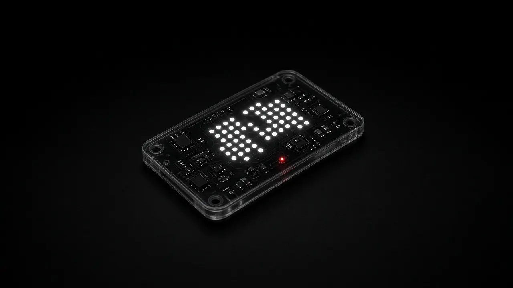
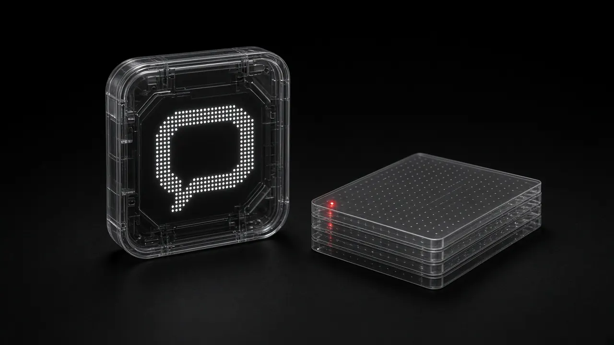

昭桥｜连接 AI 与真实业务场景
为企业与机构提供 AI 赋能培训、场景共创与系统落地实践。
预约一次 AI 场景诊断
能力4

包含
交付
案例客户名称已隐去。
维修案例
某物业服务企业的维修智能体
私有化部署，录入 500+ 维修案例和 103 条规范，自动给出维修方案并追溯责任。
案例 01 · 智能体定制
名学员
某房地产集团的生成式 AI 工具实战课
半天实战课，覆盖市场、设计、文案和管理层约 60 名学员。
案例 02 · 企业内训
期训练营
高校与司法 AI 训练营
高校 4 期近 200 人、司法 3 期近 100 人，带练、点评并结营验收。
案例 03 · 训练营
月度成本下降
智能审核与风控系统
替代大量人工审核，月度成本下降约 87.5%。
案例 04 · 系统落地
流程6
培训前，我们会先做访谈调研，按需定制课纲，准备好练习环境，不用通用课件。
培训后，我们会辅导作业、评选成果，并跟进实际使用情况。
联系
带一个实际任务来，我们一起做出来
电话 / 微信18046508566